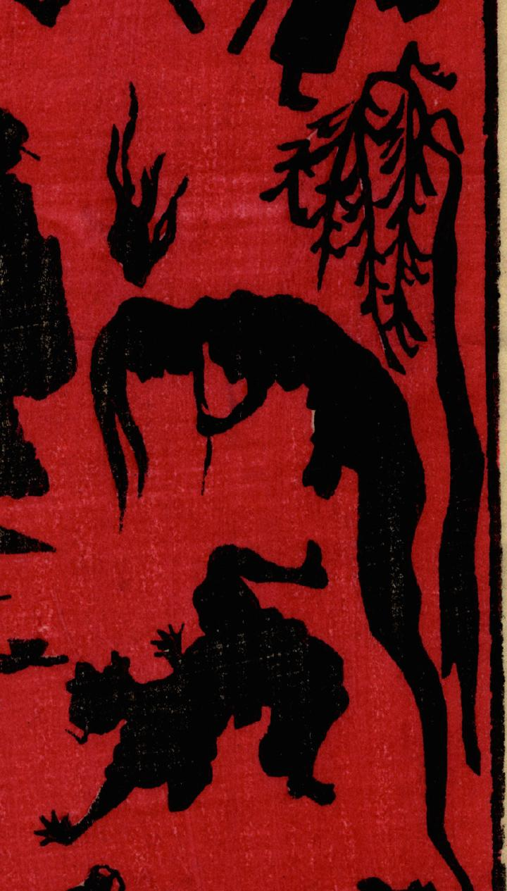

柳のそばで人間を脅かす幽霊。背後には怪火が浮かんでいる。髪が長く女性の幽霊のように見え、足はない。人間を見下ろすようにして浮かんでいる。
著作者：小林英次郎／出典：親書誌：U426_nichibunken_0270：しん板かげゑづくし；シンパン カゲエズクシ／日付：2014／資源識別子：U426_nichibunken_0270_0019_0000
Copyright (c)2010- International Research Center for Japanese Studies, Kyoto, Japan. All rights reserved.